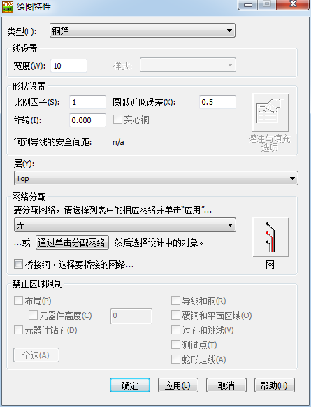

20160327
覆铜(Copper Pouring)
cmd : po # 在显示覆铜边框(Pour outline)和已经覆铜填充(Poured Copper Hatch) 之间切换
Copper 铜箔
-------- 绘制一块实心铜，从而将覆盖区域内所有的连线和过孔连接起来，而不会考虑是否属于一个网络。
-------- 用途:芯片需要大面积覆铜来散热,电源连接处需要尽可能的宽,可以用Copper来实现,不具备自动避让其他网络的直线和过孔等.如果违规,可通过安全间距检查出来
Copper Cut Out 铜挖空区域
-------- Copper Cut Out是需要与Copper合并才会正式执行的,两种图形都画好重叠后 / 右键 选择形状 /
/右键 合并(Combine) or 取消组合 /
例 : 加大某个焊盘的面积
>绘图工具盒(Drafting Toolbar) / 铜箔(Copper) / Right Menu / 绘图OK自动弹出如下

")
层(Layer) : 点击下拉框,设定铜箔放置在哪一层 Top or Bottom
网络分配(Net assignment) : 点击下拉框,选择铜箔的网络
因铜箔分配了网络关系,所以会有连线出现,这是为了提醒用户还未有布线连接该铜箔.
如铜箔已覆盖在该网络的导线或焊盘上,在检查连接性也不会定义错误的,所以可以选择不理会,
但为了文件的完整性一般还是建议使用布线指令把这些连线连上.
Copper Pour 覆铜
-------- 仅仅连接有相同网络的过孔,可以通过这个来连接.用于no plane的,具备自动避让功能的。
不会自动移除独立焊盘,不可以在大块铜皮上进行其他网络的分割,也就是说不能出现大块铜皮包围小块铜皮的现象.可以走线。
Copper Pour Cut Out 覆铜挖空区域
Flood 灌注
Plane Area 平面区域
-------- 用于split/mixed平面类型的，必须使用内层分割命令Plane Area，可自动移除内层独立焊盘，可以方便的在大片铜皮上进行其他网络的分割，内层分割的智能化较高。可以走线
-------- Plane Area这命令只能在Split/Mixed(分割/混合)层才可以运用
Plane Area Cut Out 平面挖空区域
Hatch 填充
覆铜管理器(Pour Manager)
灌注(Flood)
填充(Hatch)
")
填充所有的(Hatch All)将重新填充所有的区域，包括以前灌注过(Flooded)的或者被修改的(Modified)
快速填充(Fast Hatch)将重新填充被修改的(Modified)，但不包括已经填充的(Hatched)
在你编辑完任何填充边框(Hatch Outlines)之后，避免使用灌注所有的(Flood All)。
灌注(Flood)仅仅是灌铜(Pour)；填充(Hatch)仅仅是对于你需要的边框。
平面链接(Plane Connect)
")
Flood和Hatch的区别
flood比较正确的说法应该叫灌铜，是指对用（Copper Pour)画幅出来的闭合区域根据设定规则进行铺铜的一个动作。
而铺铜是指用Copper手动画铜皮。
Flooding会重新计算灌注区域并重新计算当前填灌区域的外形线内障碍的所有间距，和一些注意的间距规则。
Hatching则用来（用填充线）重新填充当前会话内已经存在的填灌多边形，而并不会重新计算填充填灌区域。
每次打开一个设计文件时，你应当对这个设计进行flood或hatch；这些信息是不保存的。
大部份情况下，你只要简单的Hatch一下就够了。当你对灌铜多边形的修改会引起规则冲突时，
或当你修改了间距规则时，请使用flood。
意思就是说,比如,你拿到人家的PCB,只是替别人出GERBER,不修PCB的内容.那么你可以用HATCH命令.这个动作仅仅是显示POUR COPPER
如果你对PCB(的电气层)作了修改,就一定要进行FLOOD和PLANE CONNECT操作
比较好理解的方法可以这样理解:flood是用来重新给PCB板灌铜或刚LAY好的板子灌铜.
而hatch是用来恢复灌铜,因为PADS当你关提已铺好铜的PCB文件,再重新打开PCB时,看到的文件是看不到铜了,
只有铜框,当你想看到你以前铺好铜的文件只要点中hatch就能恢复你以前铺铜的状态.
比如你发一个PCB文件给你老大检查你的PCB看合不合格,你老大为了在不变动你的文件,
当然包括也不改变你的铺铜方式,你老大只要点一下hatch这个功能,文件就恢复为你铺好铜的PCB完整文件